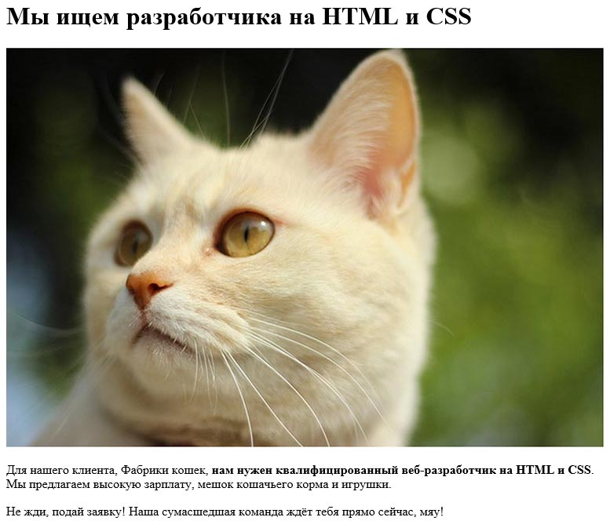
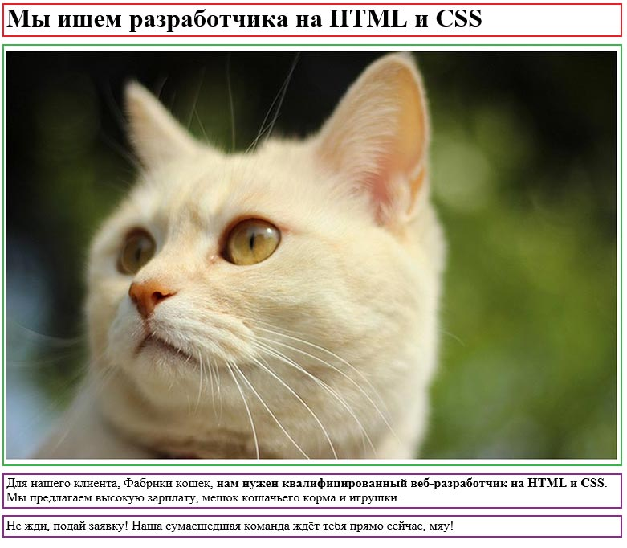
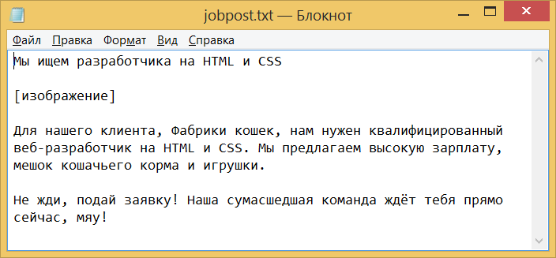
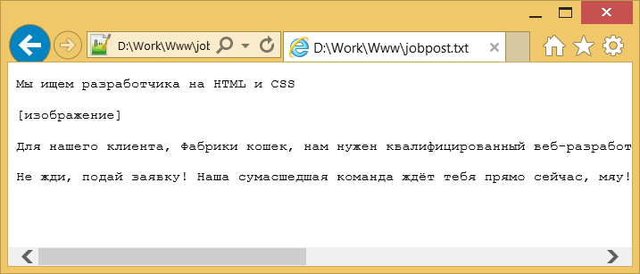
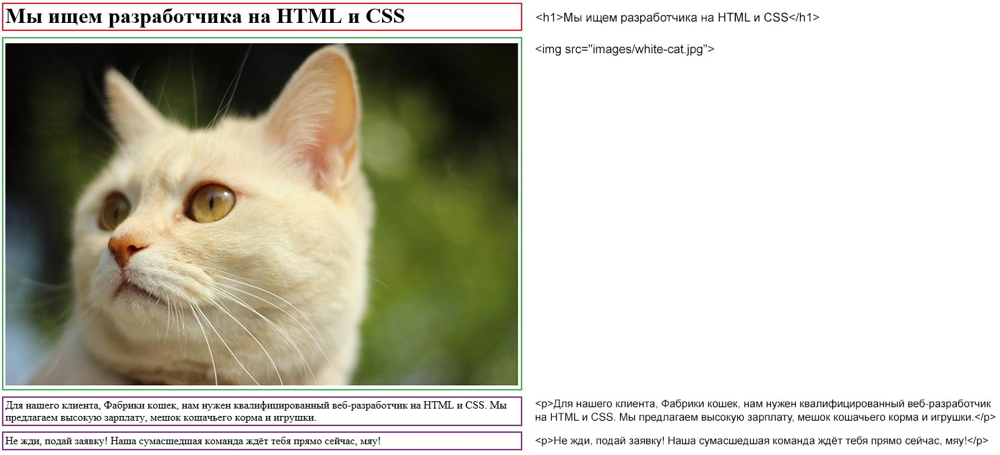
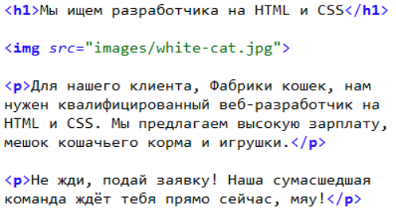
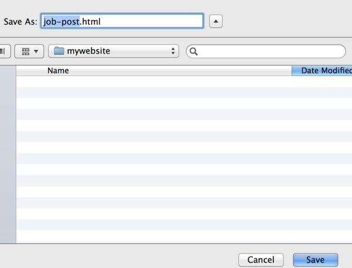
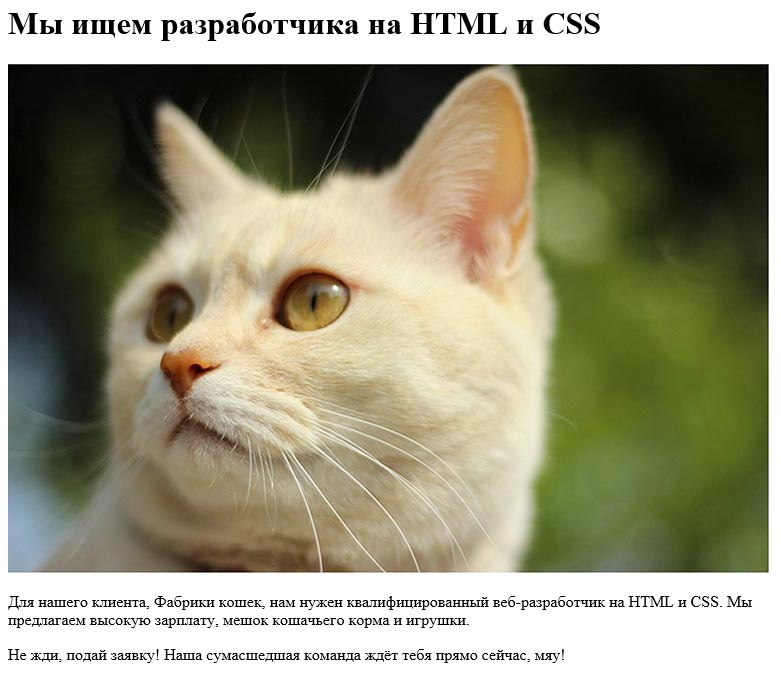
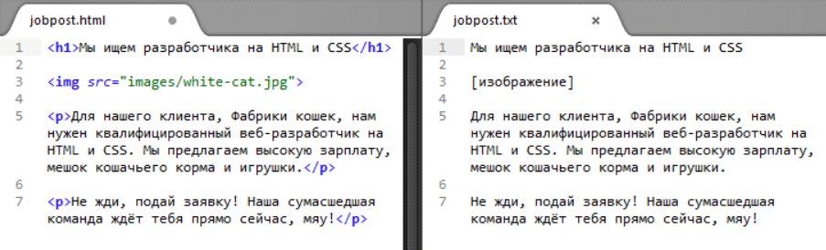
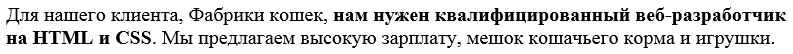

Делаем наш первый сайт
Предположим, что мы хотим создать веб-страницу с размещением вакансии. Это должно выглядеть примерно так.

Прежде чем создавать любые веб-страницы, хорошей идеей будет разделить содержимое на более мелкие компоненты по их важности. Давайте теперь попробуем определить и выделить каждый элемент этой вакансии, как мы это проделали на примере с The Verge.

Краткий анализ поможет нам лучше понять, какие области текста должны выделяться в данной вакансии. Красный цвет указывает на текст заголовка. Зелёный показывает на сопутствующее изображение. А фиолетовый цвет маркирует два абзаца (или «тело») вакансии.
Вернёмся на минутку к аналогии с программой редактирования текста, где веб-страницы могут быть созданы как обычные текстовые документы. Возможно, OpenOffice, Блокнот или Word будет содержать текст объявления, а затем сохранит его в виде текстового файла. Он должен работать правильно?

Если вы проверите это в браузере, то получите следующее.

Однако это выглядит не так, как мы планировали, не правда ли? Это просто масса текста и без отображения картинки. Что теперь? Может быть мы должны попытаться использовать для создания этого поста Word или Photoshop? Нам точно этого не хочется. Мы совершили ошибку и в ближайшее время исправим её. Ключевой проблемой является то, что мы создали сайт только с обычным текстом.
Браузер не может понять, как отобразить страницу с обычным текстом правильно. Он не знает, какая часть текста должна быть заголовком или какая часть должна быть фотографией. Чтобы отобразить страницу должным образом мы должны определить каждый элемент по его функции в тексте и передать эту информацию в браузер. Мы исполнили это лишь частично. Давайте сделаем работу немного понятней и используем правильный синтаксис, который браузер также понимает.

Как видите, в тексте есть специальная маркировка. Мы вернёмся к ней позже. Сейчас лучше просто попробовать скопировать всё в точности как есть, сверху вниз, как если бы вы строили с помощью блоков, один за другим.
У вас должно получиться нечто вроде этого.

Далее сохраняем файл с расширением .html. Кстати, рекомендую вам текстовый редактор Sublime Text, который является одним из лучших редакторов кода.

Теперь проверим новый файл в браузере.

Это выглядит немного лучше. Каждая секция текста теперь отформатирована по своему и также отображается картинка. Это ещё не окончательный вариант. Не хватает цвета и жирного текста, да и стили не совсем совпадают. Перед тем как мы поработаем над этим, переместим внимание на структуру страницы.
Для начала сравним обычный текстовый документ с версией, представленной в HTML.

В результате, окружая конкретные фрагменты текста специальными тегами, мы создали между ними различие, которое понимает браузер. Выход найден!
Это называется HTML или Hypertext Markup Language (язык разметки гипертекста) и это основной язык разметки для отображения информации в браузере. Проще говоря, это язык, который использует «теги» (например, <так>) для разметки текста, чтобы вы могли описать текст своему браузеру. Поисковые системы и некоторые другие программы, которые мы рассмотрим позже, также включают HTML. Теги подобны грамматическим формам в речи, без них вы не можете построить сайт, так же, как не можете написать правильные предложения или абзацы без грамматики.
В нашем случае мы использовали только несколько простых тегов. Ниже представлен список функций, которые выполняет каждый тег.
<h1> — заголовок (первого уровня);
<img> — изображение;
<р> — абзац текста.
Итак, если у вас есть сайт с несколькими абзацами текста, вы окружаете каждый абзац тегом <p>. Если текст является основным заголовком, то окружаем его <h1> и т. д.
Все конструкции тегов чрезвычайно просты и выглядят следующим образом.
<tagname>контент</tagname>Вы могли заметить, что второй тег отличается. Это потому, что каждый тег должен быть «закрыт», если говорить на жаргоне. Слэш в закрывающем теге сообщает браузеру, что это разметка завершает элемент. Например, все элементы абзаца заканчиваются </p>, в то время как Заголовок 1 заканчивается </ h1>.
Есть также теги, которые не нужно закрывать. Например, тег изображения <img>, который используется для вставки картинки. В нашем примере выше, мы использовали его так.
<img src="images/white-cat.jpg">Есть ещё несколько тегов, которые не должны «закрываться», о них вы узнаете чуть позже из этой книги.
Важным пониманием касательно HTML-тегов является то, что HTML содержит словарь, который определяет теги и описывает, когда и где их использовать, подобно словарю, содержащему слова языка. На данный момент мы рассмотрели всего несколько тегов, но их на деле очень много. Международная организация, известная как World Wide Web Consortium (W3C), рекомендует лучшие практики, стандарты и совместимость по всему Интернету. Вы можете посмотреть определение HTML-элементов здесь: http://www.w3.org/TR/html-markup/elements.html.
Кроме того, полезно помнить, что HTML, как и естественные языки, эволюционирует со временем. Сегодня мы используем пятую версию HTML, известного как HTML5.
Возвращаясь к нашему примеру, так должен выглядеть HTML-код.
<h1>Мы ищем разработчика на HTML и CSS</h1>
<img src="images/white-cat.jpg">
<p>Для нашего клиента, Фабрики кошек, нам нужен
квалифицированный веб-разработчик на HTML и CSS.
Мы предлагаем высокую зарплату, мешок кошачьего корма и игрушки.</p>
<p>Не жди, подай заявку! Наша сумасшедшая команда ждёт тебя прямо сейчас, мяу!</p>Обратите внимание, что код содержит два абзаца текста, отмеченных внутри тегов <p></p>.
<p>Для нашего клиента, Фабрики кошек, нам нужен
квалифицированный веб-разработчик на HTML и CSS.
Мы предлагаем высокую зарплату, мешок кошачьего корма и игрушки.</p>
<p>Не жди, подай заявку! Наша сумасшедшая команда ждёт тебя прямо сейчас, мяу!</p>Предположим мы хотим, чтобы читатель нашего объявления обратил особое внимание на определённую часть абзаца. Скажем, мы желаем выделить текст «нам нужен квалифицированный веб-разработчик на HTML и CSS». Какой тег даст знать об этом браузеру? Ответ — элемент <strong>, он окружает фрагмент текста, который представляет собой важное значение для содержания.
<p>Для нашего клиента, Фабрики кошек, <strong>нам нужен
квалифицированный веб-разработчик на HTML и CSS</strong>.
Мы предлагаем высокую зарплату, мешок кошачьего корма и игрушки.</p>
<p>Не жди, подай заявку! Наша сумасшедшая команда ждёт тебя прямо сейчас, мяу!</p>Обратите внимание, что тег <strong> окружает текст, а также находится в теге <p>. В терминах программирования мы бы сказали, что тег <strong> является «дочерним» элементом для <р>, потому что он располагается внутри родителя. Есть много тегов, которые могут быть вложены в другие теги, а многие другие не могут. Каждый тег имеет конкретный перечень возможных элементов HTML, который может содержать (или находиться в них) и вам нужно будет проверить, разрешён или нет определённый тег. Вы можете думать об этом, как о мелких блоках для комбинирования больших блоков (в данном случае блок <strong> является компонентом <р>, который, в свою очередь, выступает блоком всего текста).
Вот как это выглядит на странице.

Заметьте, что браузер отображает фрагмент жирным шрифтом, но это не всегда так. Довольно распространено, что <strong> делает текст жирным, но иногда это будет проигнорировано. Мы использовали этот тег в тексте, потому что он является хорошим примером того, как работает вложение, но визуальные эффекты (вроде жирности) лучше получаются на языке называемом CSS, о котором мы больше узнаем дальше.

Все материалы сайта доступны по лицензии Creative Commons «Attribution-NonCommercial» («Атрибуция — Некоммерческое использование») 4.0 Всемирная, если не указано иное.